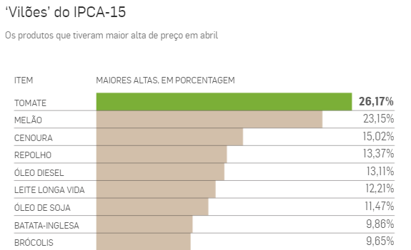

Descubra quais são os produtos alimentícios que mais subiram de preço.
Certo! ✅
A resposta é tomate 🍅. De março para abril, o tomate foi responsável por deixar a salada 26,17% mais salgada. Nos últimos 12 meses o aumento foi de 117,48%, sendo o alimento com maior alta registrada no ranking do mês pelo IPCA-15.